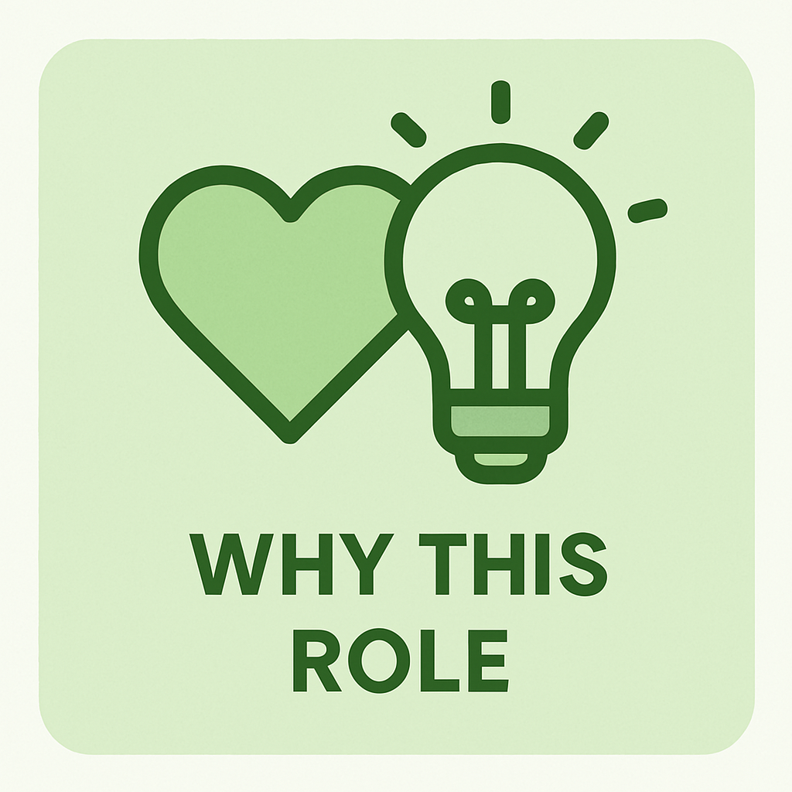
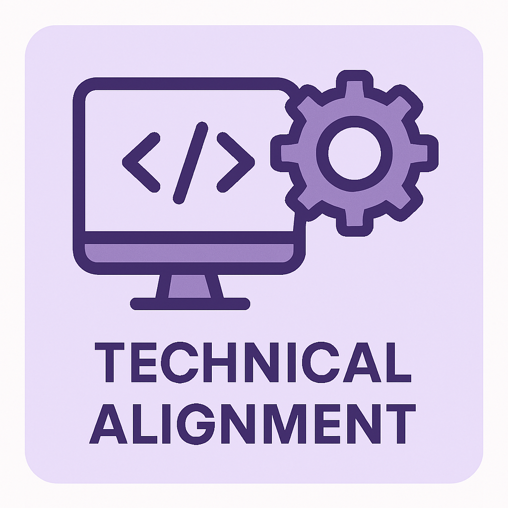
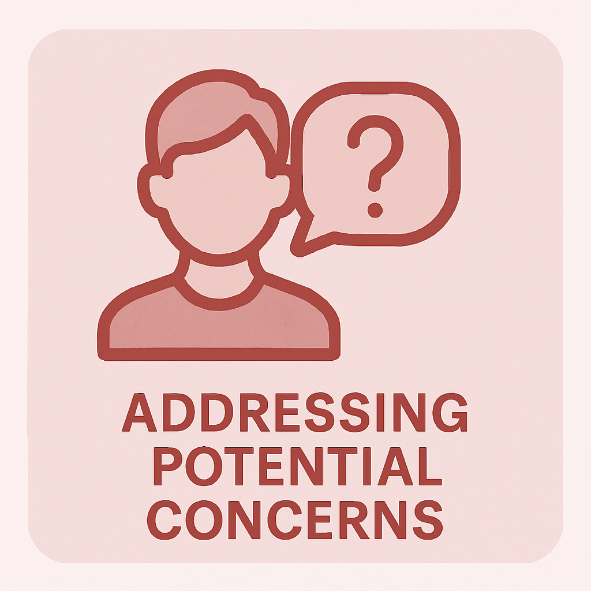
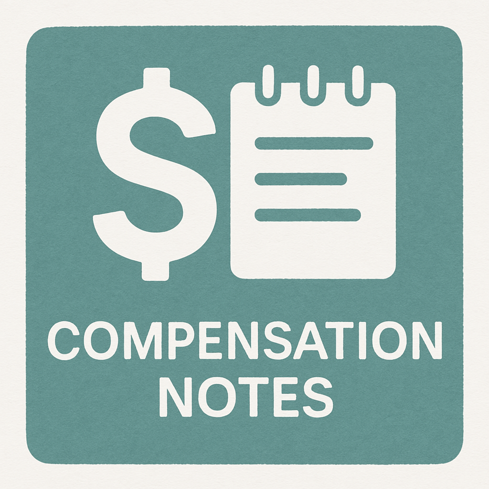
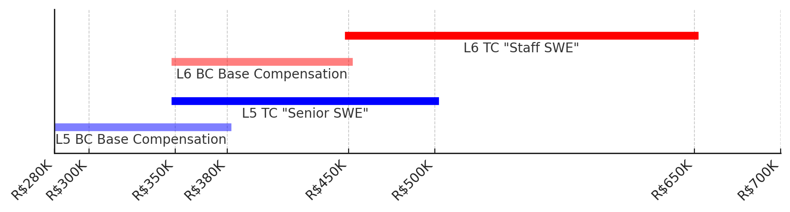
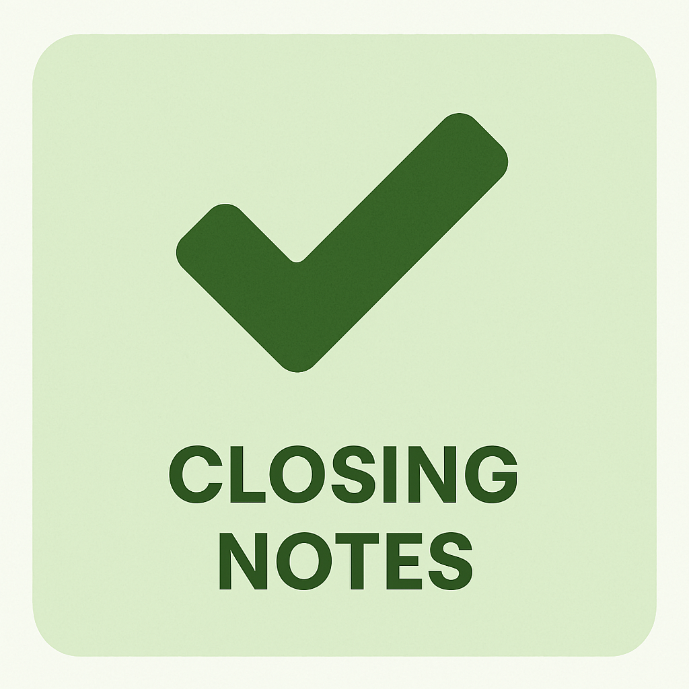

Google Technology Reference
- ShieldGemma
- Content moderation LLM family (2024)
- Perspective API
- Text toxicity detection service
- TensorFlow Extended
- ML pipeline framework for production
- Content Safety API
- CSAM detection system
- VVR (YouTube)
- Violative View Rate - key safety metric
INTRODUCTION (2-3 min)
- Location: Juiz de Fora, excited about BH (wife and I love the city)
- Education: BSc Computer Science, ML/AI specialization (completed with ~90% gpa, will receive diploma in July)
- Experience: 8 years software dev, 5 years leading tech teams, 7 years ML/AI
- Current Role: Director of Technology at Kid Chess, led platform with AI integration
- Hook: "My content moderation experience directly connects to Google's Content Safety"
WHY THIS ROLE (2 min)
- Content safety combines my technical passion with meaningful impact
- Kid Chess experience showed me importance of protecting users while preserving experience
- Excited about applying ML to complex moderation challenges at Google scale
- Familiar with Google's Perspective API and ShieldGemma approaches
- BH-specific: Google's first Latin American engineering center with its global impact
- Local context: Understand Brazilian regulations (Marco Civil, PL2630 proposals) -- Similar to how I had to adapt Kid Chess for "COPPA" (Children's Online Privacy Protection Rule)
- Growth: Eager to progress from ML implementation to systems architecture leadership
EXPERIENCE
Story 1
KCO Platform Safety
- Built chat moderation system during pandemic for ~4000 students
-
Multi-layered approach:
- Rule-based filtering with SQL "Reviles" table + regex matching
- Period differential and full-chat context analysis for nuanced detection
- Human escalation with clear protocols
- Key challenge: Balancing safety vs. experience for young learners
- Results: Reduced incidents requiring intervention from 10/week to <1 while maintaining over 90% student retention
- Google parallel: Same hybrid approach at scale, similar trade-offs
Story 2
SiameseSBERT AV Research
- Implemented Siamese Sentence-BERT for authorship verification
- Near* SOTA Metrics: AUC 0.900, F1 0.785 on benchmark dataset (*despite harder VALLA formulation)
- Developed novel LILA dataset with robust genre/topic controls
- Employed adversarial techniques such as text-distortion to enhance model robustness
- Built comprehensive evaluation pipeline across metrics (C@1, F1, F0.5u, AUC, Brier)
- Processed 10M+ words on AWS-EC2
- Google relevance: Same transformer architectures used in classifiers
Leadership 1
Pandemic Response Leadership
- Led emergency digital transition for ~4000 students
-
Assembled talent across disciplines:
- (John S) Marketing colleague → API evaluation
- (Doug C) Ex-Microsoft now coach → platform architecting and back-end
- Coaches → content streaming
- (Alvin K) Alumni/university → development
-
Made rapid technology decisions:
- Initial S3 solution → Angular/Azure platform
- Prioritized team strengths over personal preference
-
Scaled beyond basics:
- Custom chat system
- Safety moderation
- Engagement features
- Guided entire company (150 employees) through transition
-
Results:
- 90% student retention when competitors failed
- Able to maintain 50% staff during pandemic and make rehire offers to 100% on return to the field
- Special recognition award, to be named after me, though I requested the name be changed.
TECHNICAL ALIGNMENT (2 min)
- ML/AI: PyTorch, HuggingFace, Transformer architectures, NLP, model evaluation
- Languages: Python, TypeScript/JavaScript (ready to learn Go/C++ for Google) Go is the top of my language bucket list, and I do have some academic experience with C++
- Systems Thinking: Designed end-to-end architectures with multiple integration points
-
Strengths:
- Balancing precision/recall in real moderation systems
- Deploying models to production environments
- Building comprehensive evaluation pipelines
- Technical direction setting across cross-functional teams
- Experience with both text and visual content safety approaches
- Metrics Knowledge: Understand VVR (Violative View Rate), precision/recall balancing across harm types
ADDRESSING POTENTIAL CONCERNS
- Scale: "While I've worked with thousands rather than billions of users, the fundamental challenges are similar - balancing accuracy, latency, and coverage"
- Google Stack: "Excited to transition to TensorFlow/JAX, focusing on architectural differences and optimization approaches"
- Leadership: "Led cross-functional teams through technical transitions - these skills translate well to Google's collaborative environment"
- Scale Readiness: "Would implement multi-stage filtering with batch processing and caching to efficiently handle Google-scale traffic"
QUESTIONS TO ASK (3-4 min)
- "What are the biggest challenges the Content Safety team in BH is currently facing?"
- "How does the BH team collaborate with other Google offices on content safety projects?"
- "How does the team handle regional differences in content policy enforcement?"
- "What does success look like for someone in this role during their first year?"
- "Could you tell me more about the team composition and structure in BH?"
COMPENSATION NOTES (if asked)
- L6 Range: R$450,000-R$650,000 TC / R$350,000-R$450,000 base
- Approach: "Based on my research for Staff SWE roles at Google Brasil, I understand the range is approximately R$450-650k total compensation. I'm flexible within that range based on the specific responsibilities." 
CLOSING NOTES
- Enthusiasm: "I'm eager to get the chance to work in a field I love on a team with such a significant impact. Working at Google scale is a dream."
- Next steps: "What are the next steps in the process?" (Be prepared for technical phone screen)